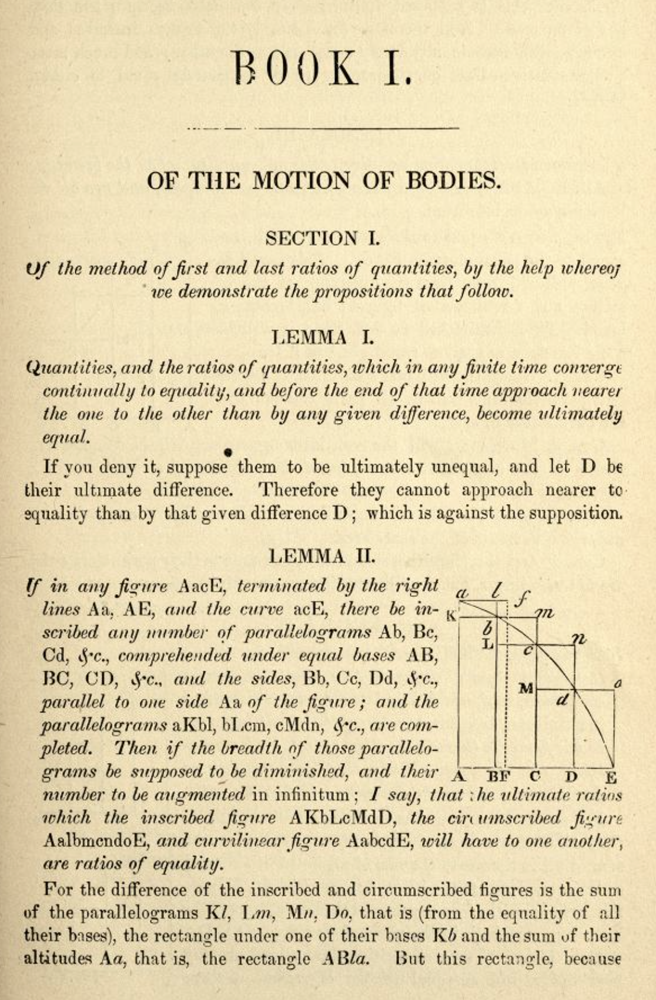

The Problem of Areas
Contents
The Problem of Areas#

import matplotlib.pyplot as plt
import numpy as np
Problem 1: Parabola#
Consider the area under the curve:
$\(f(x) = -x^2 + 4\)\( from \)x = -1\( until \)x = 1$
#define the function
#domain from -2.5 to 2.5
#plot the function with grid and color the region
Using Rectangles#
The first approach we will use is to build a small number of rectangles to approximate the area.
What are the \(x\) coordinates for these rectangles if we use 4 rectangles with equal spacing?
What would the height of the rectangles be and why?
Find the area of each rectangle.
Add these areas together.
#x values
#heights?
#areas
#total area approx
Improving the Approximation#
Use 8 rectangles and repeat the example above.
What are the \(x\)-coordinates for each rectangle
What is the height of the rectangle
What is the area of each rectangle
What is the total area of each rectangle.
#x-values
#width of each rectangle?
#heights
#areas
#total areas
Problem#
Use 16 rectangles and repeat above.
#x coordinates
#heights
#areas
#total area
QUESTIONS
Which of these was the best approximation and why?
Repeat the above process to estimate the area under the given curves with given boundaries:
\(f(x) = \sin{x}\) on \([0, 2\pi]\). Draw a plot of the region, and start with 4 rectangles to approximate the area under the curve.
Human Work#
House-painting is a job that can be done by several people working simultaneously, so we can measure the amount of work done in staff-hours. Consider a house-painting business run by some students. Because of class schedules, different numbers of students will be painting at different times of the day. Let \(s(t)\) be the number of staff present at time \(t\), measured in hours from 8 am, and suppose that during an 8-hour work day, we have:
def s(t):
return np.piecewise(t,
[t < 2, t > 2, t > 4.5],
[3, 2, 4])
t = np.linspace(0, 8, 1000)
s(t)[::100]
array([3., 3., 3., 2., 2., 2., 4., 4., 4., 4.])
plt.plot(t, s(t))
plt.grid()
plt.title('Work Hours at Time $t$')
plt.ylim(0, 5);
What is the total number of staff hours worked at times \(t = 1, 2, 3, 4, 5, 6, 7, 8\)?
Suppose that there is a house-painting job to be done, and by past experience the students know that four of them could finish it in 6 hours. But for the first 3.5 hours, only two students can show up, and after that, five will be available.
a. How long will the entire job take? b. Draw a graph of he staffing function for this problem. Mark on the graph when the job is finished. c. Draw the graph of the accumulated work function.
Problem: Computing Distance Traveled#
Suppose you are traveling in a vehicle that moves at the following speed in miles per hour at given time \(t\) (in hours):
How far would you travel in the first hour?
2 hours?
3 hours?
5 hours?
10 hours?
How much energy consumed#
Use the table below where the power demand for a house is given at time \(t\).
\(t\) |
power |
|---|---|
1:30 |
275 |
5:00 |
240 |
8:00 |
730 |
9:30 |
300 |
11:00 |
150 |
15:00 |
225 |
18:30 |
1880 |
20:00 |
950 |
22:30 |
700 |
23:00 |
350 |